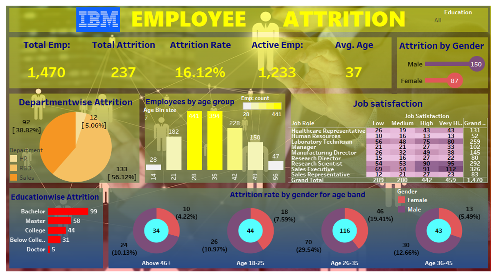
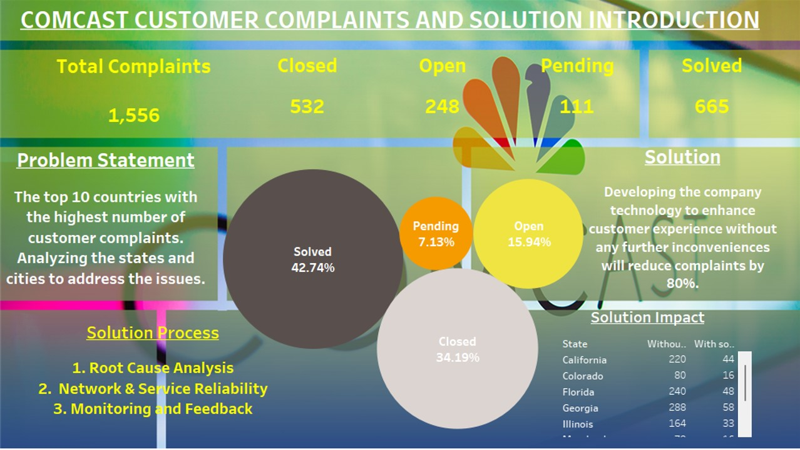

The goal of this project is to analyze the causes
for employee attrition. The process included data cleaning & preparing, conducting an exploratory data analysis, and providing an interactive dashboard containing visualized attrition trends. I used google Colab to complete this project.


This project aimed to identify customer complaints and search for solutions to mitigate them.
Usage of interactive dashboards and powerpoint presentation
skills honed me successfully complete the project.

Used Tableau to identify problems and showcase them in an interactive dashboard
The goal of this project is to analyze the causes
for employee attrition. attrition by data cleaning & preparing, conducting an exploratory data analysis, and providing an interactive dashboard containing visualized attrition trends.
Here is an example of an e-trainee manual I created and shared among employees.
This is basically a user guide for employees on Sage Business Vision.
In general, I utilize Canva, Visio, powerpoint, and other MS 365 products to
create eye-catching and quality modules for orientation, training, and other educational material.